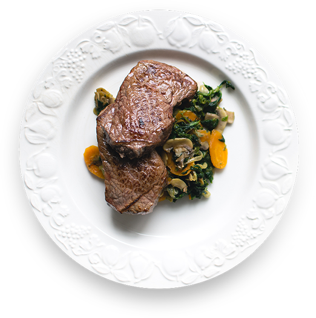

the right ingredients for the right food
Just the right food
If you’ve been to one of our restaurants, you’ve seen – and tasted – what keeps our customers coming back for more. Perfect materials and freshly baked food, delicious Lambda cakes, muffins, and gourmet coffees make us hard to resist! Stop in today and check us out!

Fine ingredients
If you’ve been to one of our restaurants, you’ve seen – and tasted – what keeps our customers coming back for more. Perfect materials and freshly baked food, delicious Lambda cakes, muffins, and gourmet coffees make us hard to resist! Stop in today and check us out!


Guest Reviews
An outstanding place for a visit on an occasion or just – if, of course, you can get a free table without prior reservation. Modern, author's, bold, bright, provocative cuisine. Comfortable, designer interior. A high level of service, the waiters are polite and attentive. Will I come back again? Absolutely.


Make a Reservation!
If you’ve been to one of our restaurants, you’ve seen – and tasted – what keeps our customers coming back for more. Perfect materials and freshly baked food.
Delicious Lambda cakes, muffins, and gourmet coffees make us hard to resist! Stop in today and check us out! Perfect materials and freshly baked food.